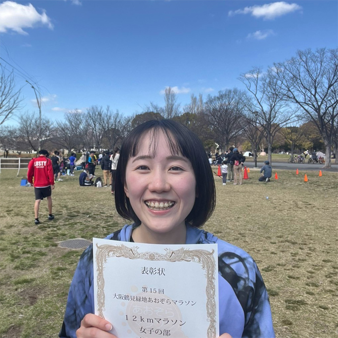
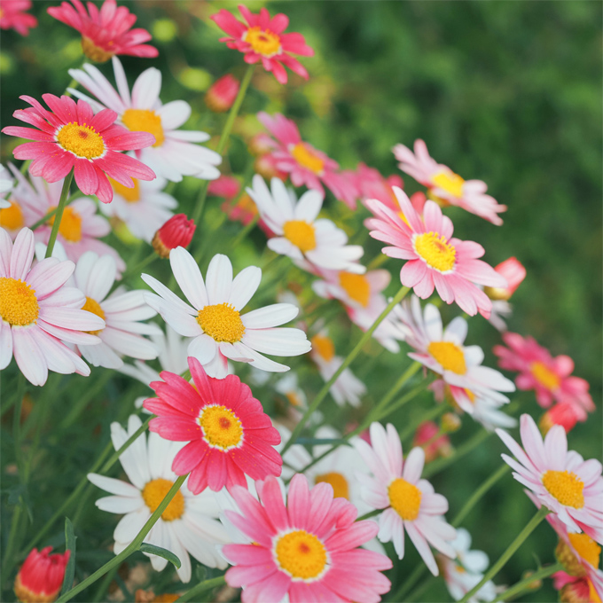

ABOUT
園田 佳那
そのだ かな
1998年滋賀県生まれ、現在は医療事務として働いています。
目標に向かってコツコツと物事に取り組める強みを活かしたい、スキルを磨きながら
働きたいという思いから、WEB業界に興味を持ち、1年間スクールで学習しました。
視覚や体感を通じて伝えるモノづくりに魅了され、Web制作の仕事を目指して転職活動をしています。
STRENGTHS
-
01｜相手目線で動ける力
医療事務や営業の経験を通して、相手が「何を求めているか」「どう伝えればわかりやすいか」を 考えることを大切にしてきました。
Web制作でも、ユーザーやクライアントの立場を意識しながら、目的に合った構成やデザインを心がけています。 -
02｜目標に向かて地道に取り組める力
すぐに成果が見えないような作業や、繰り返しの多い業務でも、 コツコツと丁寧に積み重ねていくことが得意です。
Web制作の学習も同じように、つまずきながらも試行錯誤を繰り返し、自分なりに理解して形にしてきました。 -
03｜伝達を改善し、チームで動く力
業務の中で連携ミスや伝達のずれを経験したことから、「どう伝えるか」「どう共有するか」を 意識するようになりました。
指摘をそのまま受け流すのではなく、自分の行動を振り返り、改善に活かす素直さと責任感を大切にしています。
CAREER
-
2014.4
高校ではバドミントン部に所属し、熱中していました。
練習が好きで、日々できることが増えていくことに楽しさを感じていました。 -
2017.4
龍谷大学国際学部国際文化学科に入学。
大学時代は、接客のアルバイト、留学、ボランティア活動など、興味を持ったことは「とにかくやってみる」ことを 大切にしていました。 -
2021.3
京都生活強度組合に就職。配達業務と新規利用者獲得や共済の契約などの営業業務に従事。
限られた時間の中でわかりやすく伝えるためにポップやチラシで視覚的に伝える工夫をしていました。 -
2024.1
皮膚科の医療事務に転職。 主に受付・会計・診療情報の算定業務に従事。
診療がスムーズに進むように、事務内での連携や看護師への伝達方法など、小さな部分にも気を配るようにしています。 -
2024.4
WEB制作に興味を持ち、インターネットアカデミーを受講。
1年間、HTML, CSS, JavaScript, jQuery, PythonのDjango, Photoshop, XDを学びました。
MY INTERESTS
-

Running
-

Photography
-
Reading